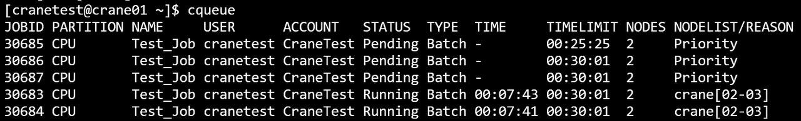
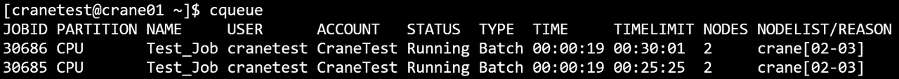
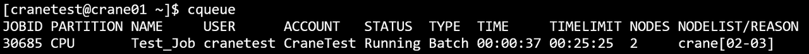
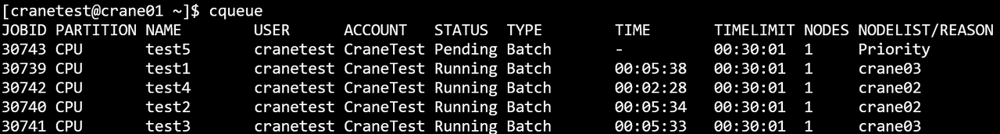
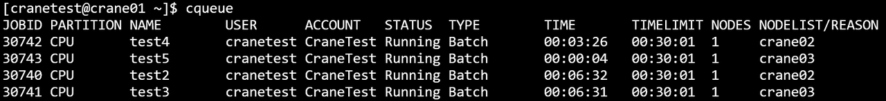

ccancel 取消作业
ccancel可以终止正在运行或者在排队中的作业。
主要参数
- -h/--help: 显示帮助
- -A/--account string：取消账户下的任务
- -C/--config string：配置文件路径(默认 "/etc/crane/config.yaml")
- -n/--name string：取消指定任务名的任务
- -w/--nodes strings：取消指定节点上运行的任务
- -p/--partition string：取消指定分区上运行的任务
- -t/--state string：取消某状态的任务。有效的任务状态是 PENDING(PD)、RUNNING(R)。任务状态不区分大小写
- -u/--user string：取消特定用户提交的任务
- -v/--version：查询版本号
例： 
- 取消作业号为30686的作业：
ccancel运行结果展示  
- 取消作业名为test1的作业：
ccancel运行结果展示
 
- 取消CPU分区上的作业

取消作业之后，如果被分配节点上没有用户的其他作业，作业调度系统会终止用户在所分配节点的所有进程，并取消用户在所分配节点上的ssh权限。